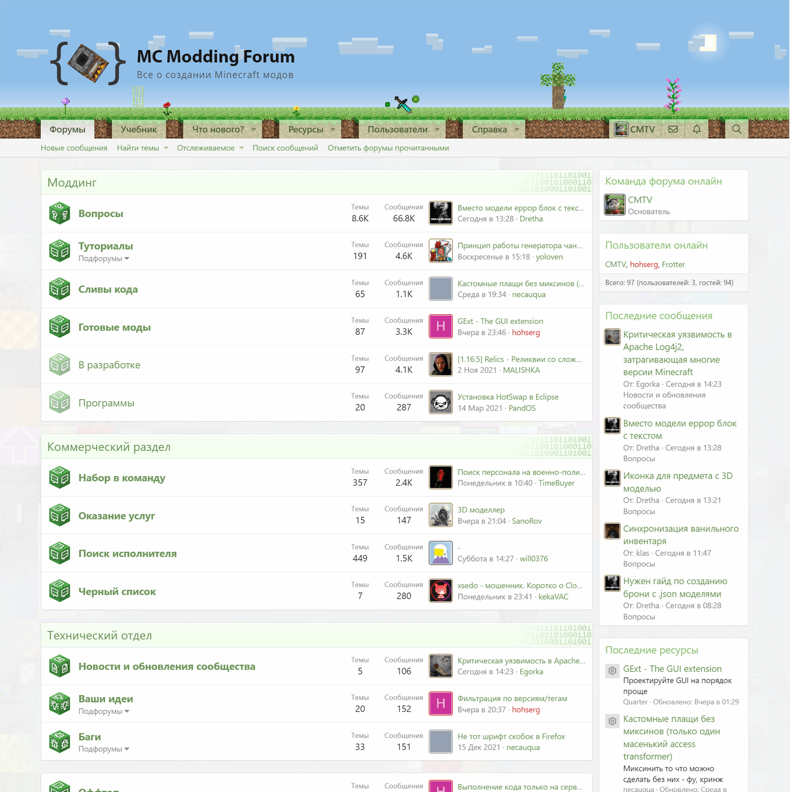

Связаться со мной
Я предпочитаю общаться в текстовом формате
Ясно и понятно обозначайте тему переписки
Готов обсудить самые безумные и интересные идеи!
newpetya@inbox.ru
Петр
Радько
Проекты
Жизнь
Minecraft Modding
Самый крупный русскоязычный портал по созданию Minecraft модов.
Статус
Тех. поддержка
Статьи
100+
Темы
15 000+
Форумчане
7 500+
Форум

Старый форум. minecraft.su.
Автор ушел в армию, поэтому все моддеры переметнулись ко мне.
Область
информатика
Действие
просвещение
Форма
сайт
учебник
форум
игра
программирование
wordpress
Начало
21 ноября 2013
Связанные проекты
CMTV
Проект начался с серий уроков по созданию модов.